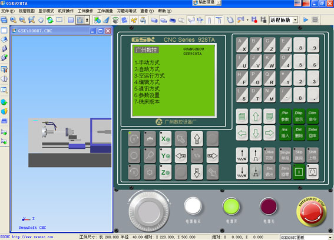
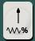

紧急停止按钮
手轮

| GSK928TA机床操作面板操作 |

模式选择开关：
主轴正转 ：手动方式或自动方式时,按<主轴正转>键（输入主轴转速）执行主轴正转功能后，或执行M03功能后该指示灯亮，表示主轴处于正转状态。
暂停
冷却：手动方式或自动方式时,按<冷却>键执行冷却开关功能后，或执行M08，M09功能后该指示灯亮或灭，表明冷却液开（亮）关（灭）状态。
运行
主轴停止：手动方式或自动方式时,按<主轴停止>键执行主轴停止功能后，或执行M05功能后，<主轴正转>指示灯和<主轴反转>指示灯不亮，表示主轴处于停止状态。
润滑：手动方式或自动方式时,按<润滑>键执行冷却开关功能后，或执行M32，M33功能后该指示灯亮或灭，表明润滑液开（亮）关（灭）状态。
主轴反转：手动方式或自动方式时,按<主轴反转>键（输入主轴转速）执行主轴反转功能后，或执行M04功能后该指示灯亮，表示主轴处于反转状态。
换刀：手动方式或自动方式时,按<换刀>键执行T功能。

速率：自动方式时,用来增加切削进给速度的倍率(0％,10％,20％,……,150％)。 手动方式时,用来选择各档手动进给速度。步长：手动方式专用,选择各档手动移动的步长。
插入：编辑时,使编辑在插入和复盖状态下切换。
删除：编辑时,删除数字,字段或程序段；输入数据时具有回删的功能。菜单选择时具有退出的功能。
参数：手动,空运行和自动方式时,用来设置系统的参数。
显示：手动,空运行和自动方式时,选择显示的内容。
命令：手动,空运行,自动和编辑方式,调用命令菜单,以执行相应的功能。
回车：数据输入的结束键,程序段的结束键,菜单选择时具有退出的功能。
退出：用于退出菜单选择,退出当前的状态或操作方式。
回零：使系统返回机械零点或加工程序零点(程序起始位置),并消除系统坐标偏置和刀具偏置。
系统控制开关：
NC启动
NC停止
紧急停止按钮 |
手轮 |
|